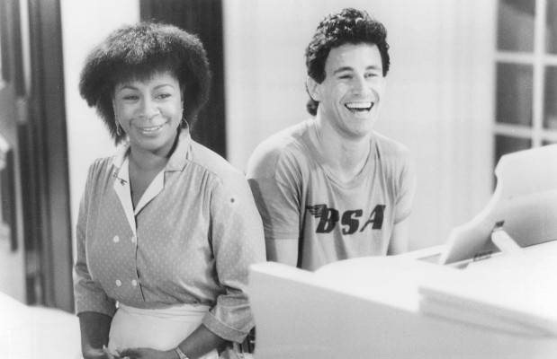

#5530 Ein Klassemädchen
Alternativ: Just the Way You Are


 IMDB-Wertung: 6.0 / 10
IMDB-Wertung: 6.0 / 10  Metascore: 0
Metascore: 0 
Die junge Flötistin Susan (Kristy McNichol), die seit ihrer Kindheit eine Beinstütze tragen muß, hat es satt, sich umsorgen und bemitleiden zu lassen. Sie läßt sich ihre Prothese eingipsen und fliegt in den französischen Skiort Mégève, wo ihr Verband nicht weiter auffällt. Bald findet sie in dem Fotografen Peter (Michael Ontkean, "Twin Peaks") einen Verehrer. Er spürt, daß sie etwas verbirgt …
Jahr: 1984
Dauer: 95 Minuten
FSK: 12
Land: USA Studio: MGM/UA Entertainment CompanyTonspuren: AAC2.0 - ,
Untertitel:
Auflösung: SD (640x480) Größe: 1464 MB
Genre: Musik, Komödie, Liebe
Regisseur: Édouard Molinaro
Drehbuch: Tony Jordan
Soundtrack:
Darsteller:
- Kristy McNichol als Susan Berlanger
-  Michael Ontkean als Peter Nichols
 André Dussollier als Francois Rossignol
André Dussollier als Francois Rossignol Robert Carradine als Sam Carpenter
Robert Carradine als Sam Carpenter Alexandra Paul als Bobbie
Alexandra Paul als Bobbie- Lance Guest als Jack the Answering Service Guy
 Tim Daly als Frank Bantam
Tim Daly als Frank Bantam- Patrick Cassidy als Steve Haslachez
 Gérard Jugnot als Desk Clerk, Hotel Monte Blanc
Gérard Jugnot als Desk Clerk, Hotel Monte Blanc Wayne Robson als Theater Assistant Manager
Wayne Robson als Theater Assistant Manager- Joanna Noyes als Doris Berlanger
 Kaki Hunter als Lisa Elliott
Kaki Hunter als Lisa Elliott- Catherine Salviat als Nicole Schallon
- André Oumansky als Paris Doctor
- Billy Kearns als Earl Cooper, Frank's Boss
- Joyce Gordon als Answering Service Lady
- Jean-Claude Ostrander als French Ski Instructor
- Garrick Dowhen als Bill Holland, American Ski Coach
- Paul Soles als Arthur Berlanger
- Gisella Witkowsky als Prima Ballerina
- Robert Scott als Waiter
- Jefferson Mappin als Cabbie
- Jim Fusco als Conductor
- Madeleine Ganne als Spectator
- Frank Emmanuel als Porter
- Caroline Beaune als Sophie
Datei: X:\1984\Klassemädchen, Ein (1984, FSK12, 640x480).mkv seit 14.02.2017
Festplatte: HD 1980-1986
 Es gibt insgesamt 46 Filme in der Gruppe '1984'
Es gibt insgesamt 46 Filme in der Gruppe '1984'